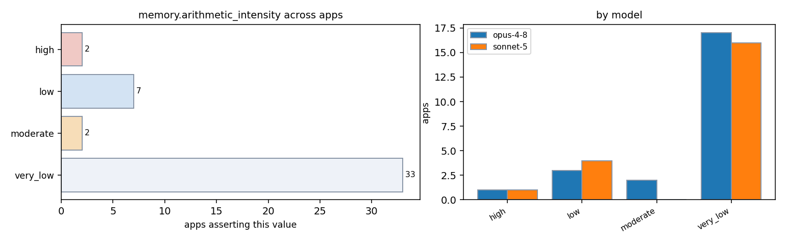

| app / variant | opus-4-8 | sonnet-5 | evidence |
|---|---|---|---|
| AMG2023:cpu | — | very_low | README.md:5-12 (sparse matvec-dominated AMG kernels typically 1-2 flops/byte) |
| AMG2023:cuda | very_low | very_low | amg.c:452 (sparse matvec ~1-2 ops per element) README.md:5-12 (algebraic multigrid solver, sparse matvec dominated, PxQxR decomposition) |
| AMG2023:mpi | very_low | — | amg.c:452 (sparse SpMV: ~1-2 flops per matrix element loaded) |
| AMG2023:rocm | — | very_low | README.md:5-12 (algebraic multigrid solver, sparse matvec dominated, PxQxR decomposition) |
| AMG:threaded-mpi | very_low | very_low | docs/amg.README:83-85 (only about 1-2 computations per memory access) docs/amg.README:83-85 (1-2 computations per memory access) |
| Kripke:cpu | — | low | src/Kripke/Arch/SweepSubdomains.h:20-55 (per-zone streaming updates, few flops per loaded value, diamond-difference discretization) |
| Kripke:kripke.exe:cuda | — | low | src/Kripke/Arch/SweepSubdomains.h:20-55 (few operations per loaded zone/direction/group value) |
| Kripke:kripke.exe:rocm | — | low | src/Kripke/Arch/SweepSubdomains.h:20-55 (few operations per loaded zone/direction/group value) |
| Kripke:kripke:cuda | low | — | src/Kripke/Kernel/LTimes.cpp:62 (one FMA per streamed element) |
| Kripke:mpi | low | — | src/Kripke/Kernel/LTimes.cpp:62 (single multiply-add per streamed flux element) README.md:22 (SIMD/memory-system efficiency the key question) |
| Kripke:threaded | low | — | src/Kripke/Kernel/LTimes.cpp:62 (one FMA per streamed element) |
| Quicksilver:cuda | very_low | very_low | README.md:15-17 (latency bound table look-ups, branchy/divergent, poor vectorization) README.md:15-17 (latency bound table look-ups, branchy code -> very low compute per memory access, poor reuse) applies equally to GPU kernel version per cudaFunctions.cc / CycleTrackingGuts kernel design |
| Quicksilver:rocm | very_low | — | README.md:15-17 (latency-bound table lookups, divergent, poor vectorization) |
| Quicksilver:threaded-mpi | very_low | — | README.md:15-17 (latency bound table look-ups, poor vectorization potential) |
| Quicksilver:threaded-mpi-cpu | — | very_low | README.md:15-17 (latency bound table look-ups, branchy code, poor vectorization -> low compute per memory access) |
| STREAM:mpi | — | very_low | README:22-25 ("Data is allocated using posix_memalign rather than using static arrays") |
| STREAM:stream_c.exe:threaded | very_low | very_low | stream.c:314-345 (Copy/Scale/Add/Triad: ~0-2 flops per element, streaming) stream.c:93-94 (STREAM_ARRAY_SIZE default 10000000, array-based streaming kernels: Copy/Scale/Add/Triad) |
| STREAM:stream_f.exe:threaded | very_low | — | stream.f:187,197,207,217 (Copy/Scale/Add/Triad streaming, ~0-2 flops/element) |
| hpl:mpi | — | high | TUNING:310-334 (blocking factor NB chosen to match matrix-multiply internal blocking for data reuse in cache; DGEMM-dominated dense factorization) |
| hpl:mpi-cpu | high | — | man/man3/HPL_dgemm.3 (O(n^3) DGEMM Schur update dominates, BLAS3 reuse) |
| hypre:mpi | very_low | — | src/multivector/par_csr_pmvcomm.c:65-96 (sparse CSR matvec: one multiply-add per nonzero, streaming through matrix) |
| hypre:mpi-cpu-boomeramg | — | very_low | src/parcsr_ls/par_relax.c and par_cycle.c:22-60 (AMG V-cycle dominated by sparse matvec / smoother sweeps, classic low flop-per-byte sparse kernels) |
| hypre:mpi-cuda-boomeramg | — | very_low | src/parcsr_ls/par_relax_device.c:18-50 (sparse CSR-based relaxation/matvec kernels, low flop per byte moved) |
| lammps:mpi | moderate | — | src/REAXFF/pair_reaxff.cpp:501-514 (many-body force terms per neighbor: bond order, valence/torsion angles, hbonds far more FLOPs per pair than pairwise potentials) |
| lammps:reaxff | — | low | src/REAXFF/reaxff_forces.cpp:40-67 (bonded/many-body kernels loop over sparse bond/hbond/valence-angle lists), doc/src/pair_reaxff.rst:178-186 (heuristic memory mgmt assumes dense, well-equilibrated sparse neighbor structures typical of PuReMD) |
| miniFE:cuda | very_low | — | cuda/src/CudaELLMatrix.hpp (sparse matvec ~1-2 flops/byte) |
| miniFE:miniFE.x:mpi | very_low | — | ref/src/CSRMatrix.hpp (CSR sparse matvec, ~1-2 flops per byte moved) |
| miniFE:miniFE.x:threaded-mpi | very_low | — | openmp/src/CSRMatrix.hpp (sparse matvec ~1-2 flops/byte) |
| miniFE:miniFE:mpi | — | very_low | ref/src/SparseMatrix_functions.hpp (CSR sparse matvec: ~2 flops per nonzero load, classic sparse-matrix low reuse) |
| miniFE:miniFE:threaded-mpi | — | very_low | openmp-opt-knl/src/SparseMatrix_functions.hpp:463-518 (CSR matvec streaming, sparse indirect access to x) |
| miniFE:mpi-cuda | — | very_low | cuda/src/SparseMatrix_functions.hpp (ELL sparse matvec CUDA kernel: streaming loads, low reuse, classic GPU sparse solver) |
| mixbench:cuda | very_low | — | README.md:65-66 (Flops/byte sweep starts at 0.25) mixbench-cuda/mix_kernels_cuda.cu:58 (compute_iterations=0 case: one load, no math) |
| mixbench:opencl | very_low | — | README.md:64-66 (Flops/byte sweep) |
| mixbench:rocm | very_low | — | README.md:64-66 (Flops/byte sweep) |
| mixbench:sycl | very_low | — | README.md:64-66 (Flops/byte sweep) |
| mixbench:threaded | very_low | — | mixbench-cpu/mix_kernels_cpu.cpp:29-33 (compute_iterations loop from 0 up) |
| osu-micro-benchmarks:cpu | — | very_low | c/mpi/collective/blocking/osu_allreduce.c:164-166 (single reduction op MPI_SUM over buffer per iteration, no other arithmetic) |
| osu-micro-benchmarks:mpi-cpu | — | very_low | c/mpi/pt2pt/standard/osu_bw.c:184-186 (buffers filled with pattern then just sent/received, no arithmetic on payload) |
| osu-micro-benchmarks:osu_latency:mpi | — | very_low | c/mpi/pt2pt/standard/osu_latency.c:197-251 (simple byte copy send/recv, no arithmetic on data) |